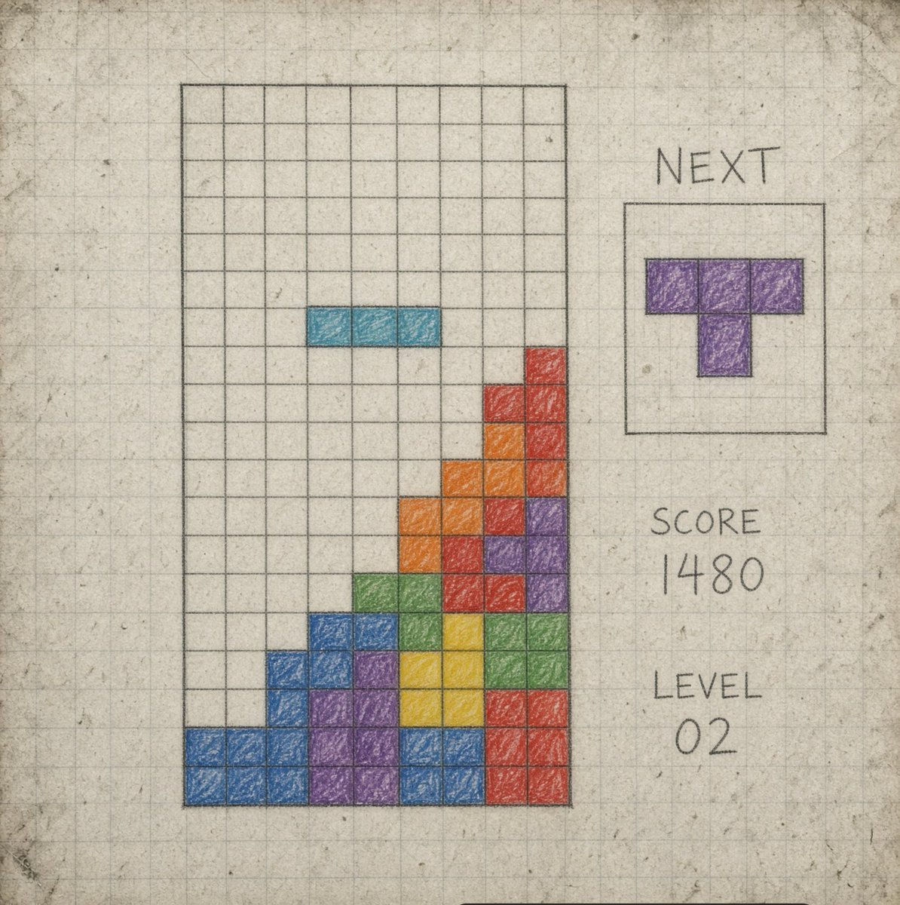

Retro Tetris
Las nueve variantes se hicieron con el mismo modelo local, Qwen 3.8 27B, corrido sobre harnesses distintos. Lo que cambia no es el modelo: es Claude Code, Codex, Droid, Hermes, OMP, OpenCode, Pi, Qwen y Grok, en ese orden. Elegí una y se abre su index.
El prompt que se le pasó a todos fue el mismo:
Build me a Retro Tetris game with film grain effects. The grain effect needs to be rolling when playing. Include game sound, optional music, and great graphic effects + movement. Use the referenced image.
